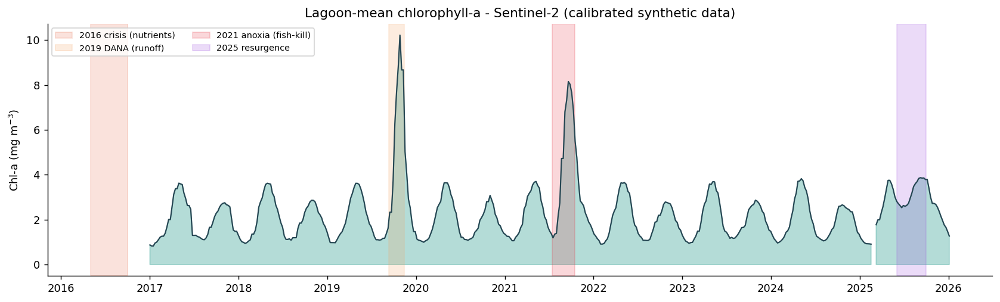
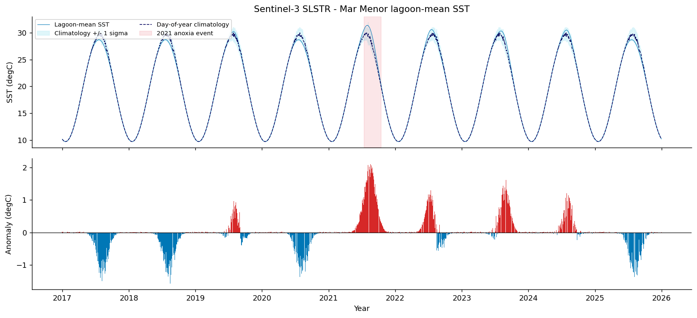
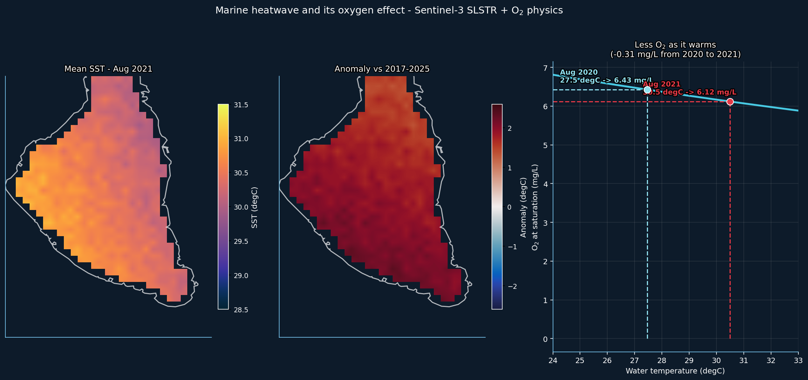
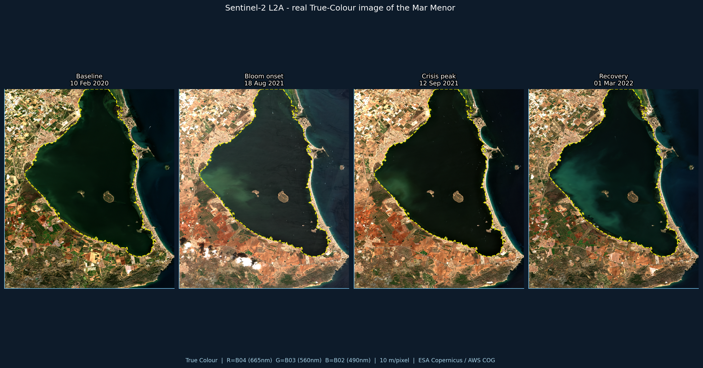
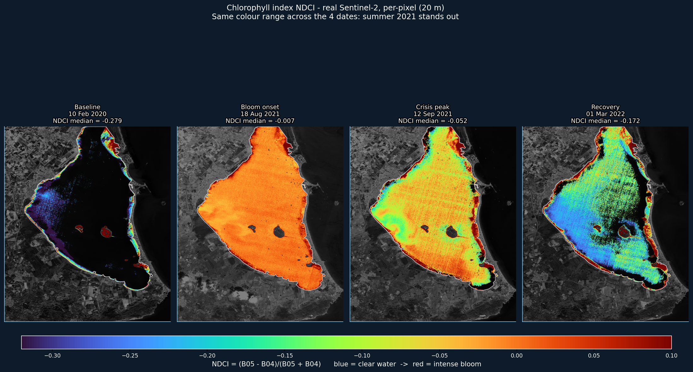
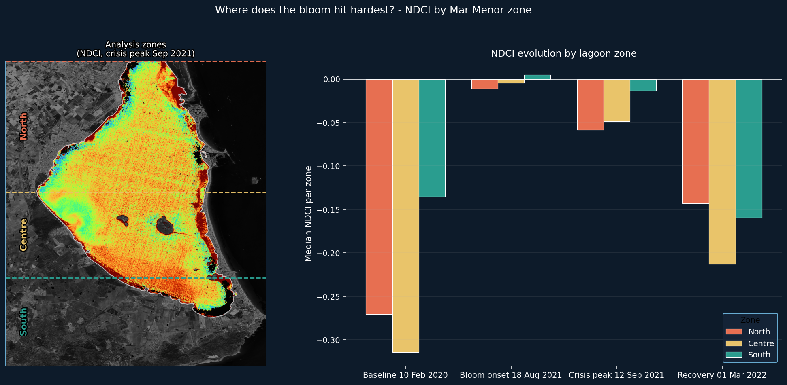
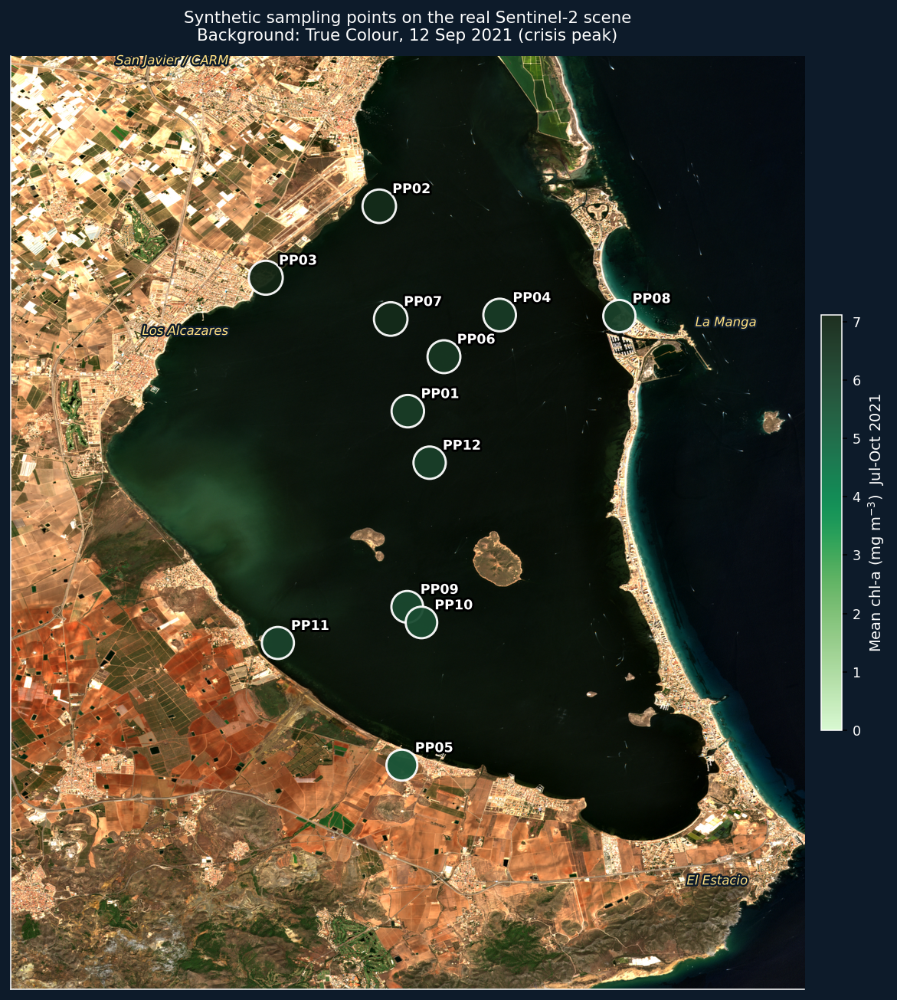

Step by step: from raw Sentinel reflectance to the visible fingerprints of a dying lagoon — Sentinel-2 water colour and Sentinel-3 temperature.
Three ideas before any code: Case-2 optics, the red-edge index, and how the notebook is split into runnable sections.
Open-ocean (Case-1) algorithms assume phytoplankton alone drives the colour. The Mar Menor is shallow and nutrient-loaded, so three things move the signal independently of chlorophyll.
The fix: the C2RCC neural-network correction, then a locally-calibrated index.
L2A surface reflectance is a LAND correction — not, by itself, an aquatic C2RCC product.
Chlorophyll absorbs strongly in the red (B04, 665 nm) and reflects in the red-edge (B05, 705 nm). Any ratio of the two rises with concentration.
Robust to sediment, unlike a blue/green ratio.
Real Mar Menor NDCI runs from −0.28 (clear winter water) to −0.05 (summer bloom).
Cached datasets in data/. Runs in class with no internet, no account.
The CDSE / STAC download patterns. Shown, not run in class.
Figures from real Sentinel-2 scenes. The lagoon outline is the actual satellite coastline.
The split means a student never gets stuck mid-lesson: “what runs anywhere” is cleanly separated from “what needs the cloud”.
Open the Table of contents (☰) in Colab to jump between them.
Everything here runs from cached data calibrated against the published literature. The documented crises appear in the right months.
Read the 12-point table, average to a lagoon-wide weekly mean, and smooth with a 4-week rolling window. The four crises light up.
s2 = pd.read_parquet(
DATA/'sentinel2_waterquality.parquet')
weekly = (s2.set_index('date')['chla_mg_m3']
.resample('W').mean()
.rolling(4, min_periods=1).mean())
Build a day-of-year climatology (mean per day 1–365 across all years) and subtract it. What remains is the anomaly — red = warmer than usual.
clim = df.groupby('doy')['sst'].mean()
df = df.join(clim, on='doy', rsuffix='_clim')
df['anomaly'] = df['sst'] - df['mean']
August 2021 ran +1.9 °C above climatology. The Benson–Krause curve turns that into a −0.3 mg/L drop in oxygen capacity — the kill mechanism, quantified.
def o2_sat(T, S=37.0): # Benson-Krause O2 solubility (mg/L) ... drop = o2_sat(27.46) - o2_sat(30.50) # -> 0.31 mg/L lost from 2020 to 2021

Reference patterns for your own project: the current CDSE STAC endpoint and the Cloud-Optimised-GeoTIFF window read.
SciHub is retired. The current entry point is CDSE. Search the catalogue by area, dates and cloud cover.
stac.dataspace.copernicus.eu/v1sentinel-2-l2afrom pystac_client import Client cat = Client.open( "https://stac.dataspace." "copernicus.eu/v1/") search = cat.search( collections=["sentinel-2-l2a"], datetime="2021-08-01/2021-09-30", bbox=BBOX, query={"eo:cloud_cover":{"lt":20}})
A full scene is ~800 MB. A Cloud-Optimised GeoTIFF is internally tiled, so rasterio reads only the pixels over your bounding box — a few MB over HTTP.
This single habit is what makes EO pipelines scale.
from rasterio.windows import from_bounds with rasterio.open(tci_url) as src: win = from_bounds(*bbox, transform=src.transform) rgb = src.read(window=win) # ~8 MB instead of ~240 MB
Four cloud-free, full-coverage scenes spanning the 2021 crisis, chosen by measuring real coverage AND cloud over the lagoon itself.
Load each cached True-Colour GeoTIFF and draw the lagoon outline. The yellow line is extracted from the NIR band itself — 191 exact vertices, not a hand-drawn polygon.
def load_tci(path): with rasterio.open(path) as src: return np.moveaxis(src.read(),0,-1) for key in ['baseline','bloom','peak','recovery']: ax.imshow(load_tci(f'../data/s2_{key}_TCI.tif'))

Compute NDCI on every water pixel (clouds masked). Same colour scale across all four dates: summer 2021 stands out hard against the clear winter baseline.
b05 = load_band(f's2_{key}_B05.tif')
b04 = load_band(f's2_{key}_B04.tif')
valid = WATER_MASK & (b04>30) & (b04<800)
ndci = (b05 - b04) / (b05 + b04)
ndci = np.where(valid, ndci, np.nan)
Split the lagoon into North / Centre / South and take the median NDCI per zone, per date. The north-west shore — fed by agricultural runoff — is consistently highest.
ZONES = {'north': LAT2D > 37.72,
'centre': (LAT2D<=37.72)&(LAT2D>37.66),
'south': LAT2D <= 37.66}
for z, m in ZONES.items():
med = np.ma.median(ndci[m & ~ndci.mask])
The 12 sampling points (Section A) drawn over the real crisis-peak scene. The coastline is the satellite's — context the synthetic data alone cannot give.
img = load_tci('../data/s2_peak_TCI.tif')
ax.imshow(img, extent=ext, origin='upper')
ax.scatter(pts.lon, pts.lat,
c=pts.chla_mg_m3, cmap=CMAP_CHLA)